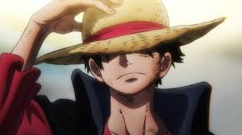
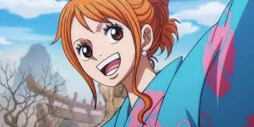
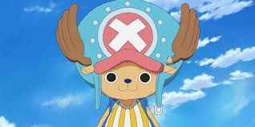
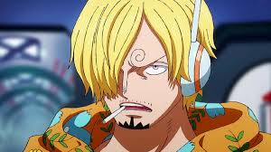
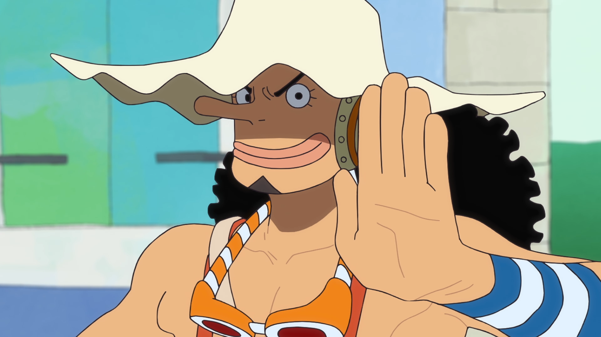
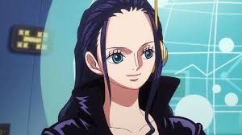
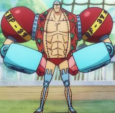
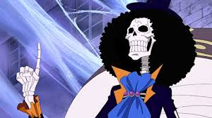
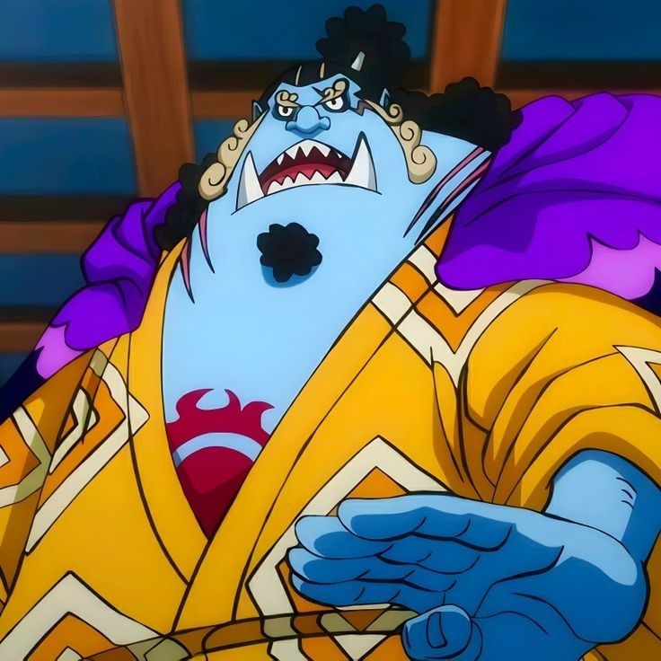

<!DOCTYPE html>
<html lang="pt-BR">
<head>
  <meta charset="UTF-8">
  <title>One Piece</title>
  <style>
    @font-face {
      font-family: 'OnePieceFont';
      src: url('fonts/onepiecefont.ttf') format('truetype');
    }

    * {
      box-sizing: border-box;
    }

    body {
      margin: 0;
      color: white;
      overflow-x: hidden;
    }

    video.bg-video {
      position: fixed;
      top: 0;
      left: 0;
      width: 100%;
      height: 100%;
      object-fit: cover;
      z-index: -1;
    }

    .overlay {
      background-color: rgba(0, 0, 0, 0.7);
      padding: 20px;
      min-height: 100vh;
    }

    h1 {
      text-align: center;
      font-size: 3em;
      margin-bottom: 10px;
      font-family: 'OnePieceFont', Arial, sans-serif;
    }

    nav {
      text-align: center;
      margin-bottom: 20px;
    }

    nav ul {
      list-style-type: none;
      padding: 0;
    }

    nav ul li {
      display: inline;
      margin: 0 15px;
    }

    nav a {
      color: white;
      text-decoration: none;
      font-weight: bold;
    }

    .intro-onepiece {
      font-size: 1.2em;
      line-height: 1.6;
      margin: 40px 0;
      background-color: rgba(255, 255, 255, 0.05);
      padding: 20px;
      border-radius: 10px;
      font-family: 'OnePieceFont', Arial, sans-serif;
    }

    h2 {
      text-align: center;
      margin-top: 40px;
    }

    .personagem {
      margin: 20px 0;
      padding: 20px;
      background-color: rgba(255, 255, 255, 0.1);
      border-radius: 10px;
      overflow: hidden;
      clear: both;
    }

    .personagem img {
      float: left;
      width: 150px;
      height: auto;
      margin-right: 20px;
      border-radius: 10px;
    }

    .personagem h2,
    .personagem p {
      margin-left: 180px;
      text-align: left;
    }

    .informacoes-anime {
      background-color: rgba(255, 255, 255, 0.1);
      padding: 20px;
      border-radius: 10px;
      margin: 40px 0;
    }

    .informacoes-anime h2 {
      text-align: center;
      font-size: 2em;
    }

    .informacoes-anime p {
      line-height: 1.6;
    }

    .imagens-anime {
      display: flex;
      justify-content: space-around;
      flex-wrap: wrap;
    }

    .imagens-anime img {
      width: 300px;
      height: auto;
      margin: 10px;
      border-radius: 10px;
    }

    footer {
      text-align: center;
      margin-top: 20px;
      padding: 10px;
      background-color: rgba(0, 0, 0, 0.8);
      border-radius: 10px;
    }

    @media (max-width: 600px) {
      h1 {
        font-size: 2em;
      }

      .personagem img {
        float: none;
        display: block;
        margin: 0 auto 10px auto;
      }

      .personagem h2,
      .personagem p {
        margin-left: 0;
        text-align: center;
      }
    }
  </style>
</head>
<body>
</body>
</html>

  <video autoplay muted loop class="bg-video">
    <source src="imagems/thousand-sunny-ship-moonlit-night-one-piece-moewalls-com.mp4" type="video/mp4">
  </video>
  <div class="overlay">
    <h1>One Piece</h1>
    <p style="text-align: center;">Bem-vindo à minha página do incrível mundo de One Piece!</p>

    <nav>
      <ul>
        <li><a href="#Inicio">Início</a></li>
        <li><a href="#personagens">Personagens</a></li>
        <li><a href="#informacoes">Informações</a></li> 
      </ul>
    </nav>

    <div class="intro-onepiece" id="Inicio">
      <p>A épica série de anime criada pelo lendário Eiichiro Oda é muito mais do que uma história sobre piratas — é um fenômeno cultural que há mais de 25 anos vem cativando gerações de fãs ao redor do mundo. Prepare-se para uma aventura em alto-mar repleta de amizades inabaláveis, batalhas pela liberdade e a incessante busca por sonhos impossíveis. Junte-se a Monkey D. Luffy, um jovem determinado e de coração puro, enquanto ele desafia o mundo em busca do lendário tesouro conhecido como One Piece. Dotado dos incríveis poderes elásticos concedidos pela mítica Fruta do Diabo, Luffy se recusa a permitir que qualquer obstáculo — seja marinho, político ou divino — fique entre ele e seu sonho de se tornar o Rei dos Piratas. Em sua jornada pela traiçoeira Grand Line, Luffy reúne uma tripulação incomparável: os Piratas do Chapéu de Palha. Cada membro, com seu próprio passado, dor e desejo, se junta à causa de um capitão que jamais lançará âncora... até que todos realizem os seus sonhos. Esta não é apenas uma história de aventuras. É uma saga sobre coragem, amizade, justiça e a eterna busca pela verdade escondida nas águas profundas do mundo.</p>
      <p><strong>Você está pronto para zarpar rumo ao desconhecido?</strong></p>
    </div>
    <h2>Personagens</h2>

    
    <div class="personagem" id="personagens">
      
      <h2>Monkey D. Luffy</h2>
      <p>O protagonista da série, Monkey D. Luffy é o destemido capitão dos Piratas do Chapéu de Palha, com um coração puro e sede de liberdade. Seu sonho é se tornar o Rei dos Piratas e encontrar o lendário tesouro, o One Piece.</p>
      <p><strong>Habilidades:</strong> Elasticidade, força sobre-humana.</p>
      <p><strong>Curiosidade:</strong> Luffy nunca desiste de seus amigos.</p>
    </div>

    <div class="personagem" id ="personagens">
      
      <h2>Roronoa Zoro</h2>
      <p>Espadachim habilidoso do bando do Chapéu de Palha. Roronoa Zoro é o espadachim leal dos Chapéus de Palha, mestre da técnica de três espadas.
        Seu objetivo é cortar todos os obstáculos até se tornar o maior espadachim do mundo.</p>
      <p><strong>Habilidades:</strong> Mestre em esgrima.</p>
        <p><strong>Curiosidade:</strong> Zoro foi o primeiro membro da tripulação.</p>
    </div>
    <div class="personagem" id ="personagens">
        
        <h2>Nami</h2>
        <p>Nami é a navegadora brilhante dos Chapéus de Palha, com um talento incomparável para mapas e clima.Guiada por seu sonho de mapear o mundo inteiro, ela navega com coragem e astúcia pelos mares mais perigosos.</p>
        <p><strong>Habilidades:</strong> Mestre em enganação.</p>
          <p><strong>Curiosidade:</strong> Nami é uma personagem extrovertida, que encanta-se por mapas e exploração. </p>
      </div>
      <div class="personagem" id ="personagens">
        
        <h2> Chopper</h2>
        <p>Um adorável rena que virou médico após comer a Hito Hito no Mi. Apesar da aparência fofa, esconde um coração valente e uma mente brilhante.</p>
        <p><strong>Habilidades:</strong> Medico.</p>
          <p><strong>Curiosidade:</strong>As comidas favoritas do Chopper são algodão-doce, chocolate e qualquer outra coisa doce. </p>
      </div>
      <div class="personagem" id ="personagens">
        
        <h2> Vinsmoke Sanji</h2>
        <p>Cozinheiro elegante que luta com os pés para proteger suas mãos de chef. Busca encontrar o All Blue, o mar lendário com peixes de todos os oceanos.</p>
        <p><strong>Habilidades:</strong> Cozinheiro.</p>
          <p><strong>Curiosidade:</strong> Sanji  não quer se arriscar danificar suas mãos, pois ele precisa cozinhar, assim, ao invés de socos, Sanji incorpora estandes de mão no estilo Perna Negra. </p>
      </div>
      <div class="personagem">
        
        <h2>Usopp</h2>
        <p><strong>Habilidades:</strong> Atirador de elite e criador de invenções.</p>
        <p><strong>Curiosidade:</strong> Usa a mentira como arma e já se autodenominou "Sogeking".</p>
      </div>
      
      <div class="personagem" id ="personagens">
        
        <h2>Nico Robin</h2>
        <p>Arqueóloga misteriosa com um passado sombrio e o poder da Hana Hana no Mi. Ela busca desvendar os segredos do século perdido e a verdadeira história do mundo.</p>
        <p><strong>Habilidades:</strong> Leitura de  Poneglyphs .</p>
          <p><strong>Curiosidade:</strong> Nico Robin é o unico membro da tripulação que contém recompensa desde criança , obtendo ela com 9 anos de idade. </p>
      </div>
      <div class="personagem" id ="personagens">
        
        <h2>Franky</h2>
        <p>Ciborgue e engenheiro naval com um coração "super" e alma de construtor. Criador do Thousand Sunny, seu sonho é ver seu navio navegar até o fim do mundo.</p>
        <p><strong>Habilidades:</strong> Mestre em Tecnologia.</p>
          <p><strong>Curiosidade:</strong> Por ser Meio Ciborgue, Ele pode liberar rajadas de ar de seus braços ao consumir grandes quantidades de cola.  </p>
      </div>
      <div class="personagem" id ="personagens">
        
        <h2>Brook</h2>
        <p>Esqueleto músico com uma alma vibrante e um passado tocante. Voltou à vida graças ao poder da Yomi Yomi no Mi e sonha em reencontrar Laboon.</p>
        <p><strong>Habilidades:</strong> Musico.</p>
          <p><strong>Curiosidade:</strong>. Após comer a Fruta Yomi-Yomi no Mi, ele faleceu por velhice  e voltou à vida como um esqueleto.  </p>
      </div>
      <div class="personagem" id ="personagens">
        
        <h2>Jinbei</h2>
        <p>Homem-peixe mestre do karatê e símbolo de honra e equilíbrio. Ex-shichibukai, agora é timoneiro dos Chapéus de Palha e navega por uma era de mudanças.</p>
        <p><strong>Habilidades:</strong> Karate Aquatico.</p>
          <p><strong>Curiosidade:</strong>.Seu sonho é realizar o último desejo de seu antigo capitão Fisher Tiger de coexistência e igualdade entre humanos e homens-peixe.   </p>
      </div>

      <div class="informacoes-anime" id="informacoes">
        <h2>Informações sobre One Piece</h2>
        <p>One Piece é um anime japonês baseado no mangá criado por Eiichiro Oda. A série estreou em 1999 e se tornou um fenômeno mundial, sendo um dos animes mais longos da história. Atualmente, One Piece conta com mais de 1.100 episódios, diversos filmes, especiais e continua em exibição semanalmente.

          A história acompanha Monkey D. Luffy, um jovem que ganha poderes elásticos após comer a Fruta do Diabo Gomu Gomu no Mi. Seu sonho é se tornar o Rei dos Piratas, encontrando o lendário tesouro chamado One Piece, deixado pelo antigo rei dos piratas, Gol D. Roger.
          
          Ao longo de sua jornada, Luffy reúne uma tripulação única e carismática, conhecida como os Piratas do Chapéu de Palha, cada um com seus próprios sonhos e habilidades:
          
          Roronoa Zoro: Um espadachim que sonha em se tornar o maior do mundo.
          
          Nami: A navegadora da tripulação, com o sonho de desenhar o mapa do mundo inteiro.
          
          Usopp: Atirador e contador de histórias, quer se tornar um corajoso guerreiro do mar.
          
          Sanji: O cozinheiro, que busca encontrar o lendário mar All Blue.
          
          Tony Tony Chopper: Um rena médica que sonha em curar qualquer doença.
          
          Nico Robin: Arqueóloga em busca da verdade sobre o século perdido.
          
          Franky: O carpinteiro ciborgue que construiu o navio da tripulação.
          
          Brook: Um músico esqueleto que deseja reencontrar seu antigo amigo, o baleia Laboon.
          
          Jinbei: Um homem-peixe mestre em karatê, que representa a aliança entre humanos e homens-peixe.
          
          Com aventuras épicas, batalhas emocionantes, laços profundos de amizade e muito humor, One Piece se destaca como uma das obras mais amadas da cultura pop mundial.</p>
        <div class="imagens-anime">
          
          
        </div>
    <footer>
      <p>&copy; 2025 - Página de Luis Eduardo</p>
    </footer>
  </div>
</body>
</html>